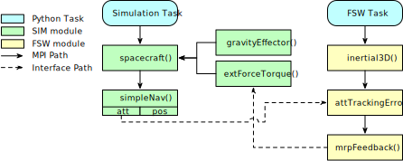
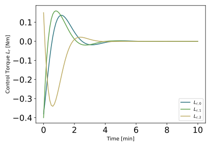
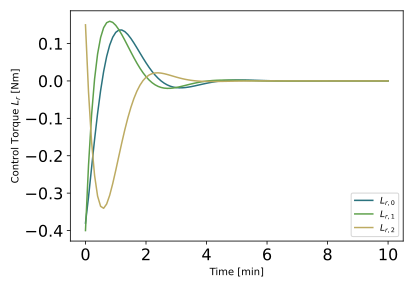
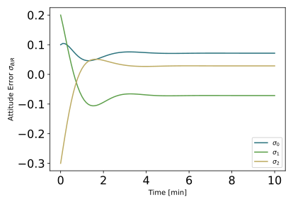
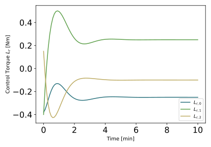
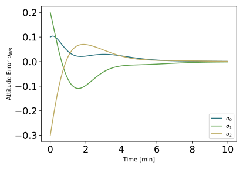
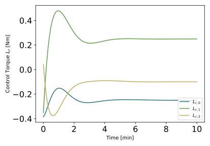

scenarioAttitudeFeedback2T¶
Overview¶
Demonstrates how to stabilize the tumble of a spacecraft orbiting the Earth that is initially tumbling, but uses 2 separate threads for dynamics and algorithm modules. This script sets up a 6-DOF spacecraft which is orbiting the Earth. This setup is similar to the scenarioAttitudeFeedback, but here the dynamics simulation and the Flight Software (FSW) algorithms are run at different time steps using two separate task groups (also called processes).
The script is found in the folder basilisk/examples and executed by using:
python3 scenarioAttitudeFeedback2T.py
The simulation layout is shown in the following illustration. Both a simulation process is created which contains the spacecraft simulation modules. A separate FSW algorithm process is run at a different updated rate to evaluate the Flight Software (FSW) algorithm modules. Interface messages are now shared across SIM and FSW message passing interfaces (MPIs).
Note that starting with Basilisk 2.0 onwards it is trivial to connect to module messages within another Basilisk process (task group). There are no additional steps required to establish these connections. Recall that this simulation is single-threaded and that the processes are evaluated sequentially. The new BSK2 messaging system got rid of message names. With multi-process simulations there are thus no longer any message naming conflicts to consider as messages are directly connected.
Further, this simulation has the logging happening at a different rate then the simulation or FSW algorithm processes. Thus, this is a demonstration of using 3 processes running sequentially.
When the simulation completes 5 plots are shown for the MRP attitude history, the rate tracking errors, as well as the control torque vector.
Illustration of Simulation Results¶
show_plots = True, useUnmodeledTorque = False, useIntGain = False
Note that now the FSW algorithms are called in a separate process, in the first time step the navigation message has not been copied over, and the initial FSW values for the tracking errors are zero. This is why there is a slight difference in the resulting closed loop performance.
 
show_plots = True, useUnmodeledTorque = True, useIntGain = False
As expected, the orientation error doesn’t settle to zero, but rather converges to a non-zero offset proportional to the un-modeled torque being simulated. Also, the control torques settle on non-zero steady-state values.
show_plots = True, useUnmodeledTorque = True, useIntGain = True
In this case the orientation error does settle to zero. The integral term changes the control torque to settle on a value that matches the un-modeled external torque.
- scenarioAttitudeFeedback2T.run(show_plots, useUnmodeledTorque, useIntGain)[source]¶
The scenarios can be run with the followings setups parameters:
- Parameters
show_plots (bool) – Determines if the script should display plots
useUnmodeledTorque (bool) – Specify if an external torque should be included
useIntGain (bool) – Specify if the feedback control uses an integral feedback term